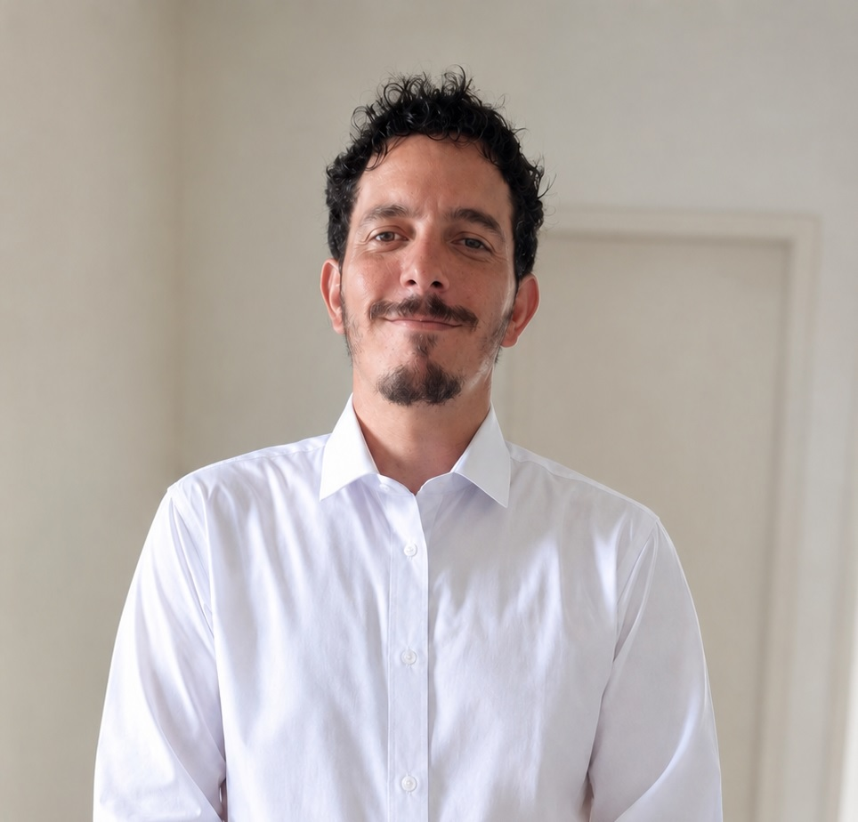

Escuta cuidadosa
Tempo para compreender sintomas, contexto e prioridades.
Atendimento médico no conforto da sua casa ou por vídeo, com tempo para compreender sua história, organizar as prioridades e construir uma conduta possível para sua realidade.
Este canal não realiza atendimento de urgência ou emergência.

Minha experiência na Atenção Primária à Saúde ensinou que compreender o território, a rotina, a família e as possibilidades reais de cada pessoa é parte do raciocínio clínico. Uma boa consulta não se resume à emissão de uma receita: ela organiza informações, reconhece riscos e transforma decisões técnicas em um plano compreensível.
Por isso, estruturo o atendimento com espaço para escuta, revisão de medicamentos, análise de exames já realizados e decisão compartilhada. Quando a avaliação por vídeo não é suficiente, a necessidade de exame presencial é informada com clareza.
Tempo para compreender sintomas, contexto e prioridades.
Benefícios, riscos e alternativas explicados com clareza.
O plano considera a vida concreta e a rede de apoio.
A modalidade é escolhida de acordo com a necessidade clínica. A teleconsulta não substitui o atendimento presencial quando o exame físico é necessário.
Avaliação clínica remota com anamnese detalhada, revisão de documentos disponíveis e orientação sobre os próximos passos.
Avaliação médica no ambiente da pessoa, especialmente útil quando o deslocamento é difícil ou o contexto domiciliar influencia o cuidado.
Você informa a modalidade desejada e recebe orientações sobre disponibilidade, valor e documentos necessários.
A história clínica é avaliada, os dados disponíveis são revisados e, quando possível, o exame é realizado.
Você recebe as orientações e os documentos pertinentes, além da definição dos próximos passos.
Projetos desenvolvidos para organizar informações, tornar pendências visíveis e apoiar decisões na Atenção Primária à Saúde.
Acompanhamento organizado de gestantes, idade gestacional, consultas, exames e fatores de risco para apoiar o cuidado pré-natal.
Organização de dados assistenciais e visualização de indicadores para qualificar o planejamento de equipes e gestores.
Ferramenta offline para reunir status, pendências e linhas de cuidado sem enviar dados clínicos para serviços externos.
Não. A adequação depende do problema apresentado e da qualidade das informações disponíveis. Quando houver necessidade de exame físico, procedimento ou avaliação imediata, será orientado atendimento presencial.
Não. Prescrições, atestados, relatórios e solicitações de exames são emitidos somente quando houver indicação clínica e respaldo técnico após a avaliação médica.
As informações clínicas devem ser registradas em prontuário e tratadas com confidencialidade. Antes do atendimento remoto, o paciente recebe as informações necessárias e manifesta seu consentimento.
Não. O canal é utilizado para informações administrativas e agendamento. Avaliação, diagnóstico e definição de conduta exigem consulta médica apropriada.
Informe se procura teleconsulta ou consulta domiciliar. A confirmação ocorre após avaliação da disponibilidade e da adequação da modalidade.